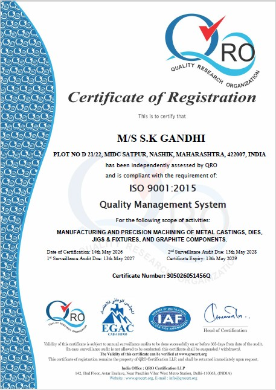

Our Commitment
Every component leaving our facility is backed by a certified quality management system, in-process inspection, and independent dimensional verification.
Certification
Our quality management system has been independently assessed and certified by QRO — Quality Research Organization, a IAF accredited body — confirming our compliance with the internationally recognised ISO 9001:2015 standard.

Quality System
Our Quality Management System is built on the principles of ISO 9001:2015, ensuring that every component we deliver meets the highest standards of precision, consistency and reliability.
Every machining operation is carried out following defined process parameters, ensuring repeatability and dimensional accuracy across all production runs — from single prototypes to repeat orders.
Our skilled workforce conducts in-process inspections at each stage of machining to identify and correct deviations before they propagate — reducing rework and ensuring first-time accuracy.
Regular internal audits are conducted to ensure compliance with our QMS procedures and to drive continuous improvement across all operations and machining processes.
For new components, a full first-article inspection is carried out against the client's drawing before series production begins — ensuring every dimension is validated before commitment.
All work orders, inspection records, and delivery notes are documented and retained in accordance with ISO 9001:2015 requirements — providing full traceability for every job.
Raw material suppliers are evaluated and approved in line with our QMS procedures — ensuring the material entering our facility meets the grade and quality required by the job.
Inspection Process
We follow a rigorous multi-stage inspection process to ensure every component leaving our facility meets the required dimensional accuracy and surface quality specifications.
Measurement
Accurate measurement is as important as accurate machining. Our facility is equipped with precision gauging instruments to verify dimensions at every stage of production.
Our certification and inspection process gives you the confidence that every component meets your drawing requirements — first time, every time.
Talk to Our Team